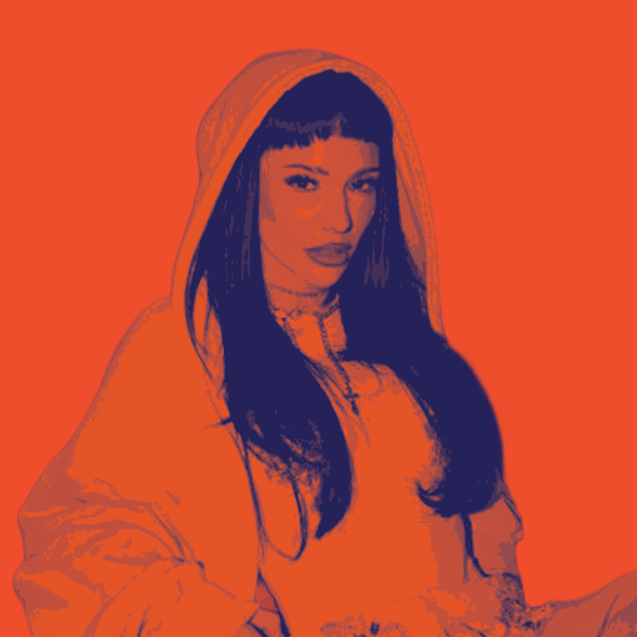

DUKI
La leyenda dentro del trap argentino. Atestigua su trayectoria desde sus comienzos hasta la actualidad.
This Is DukiEl movimiento urbano se apodera del mainstream argentino, descubrí a las leyendas del trap, reggaeton, RKT y dance.

La leyenda dentro del trap argentino. Atestigua su trayectoria desde sus comienzos hasta la actualidad.
This Is Duki
Revolucionando el RKT logra posicionarse como una de las figuras más importantes de su género.
This Is La JoaquiLogró cambiar cómo se ve el productor en la industria con sus Music Sessions. Descubrí sus mejores éxitos.
This Is BizarrapCon su estilo nostálgico y versátil, conquistó la escena con éxitos globales a temprana edad.
This Is Milo J